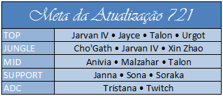
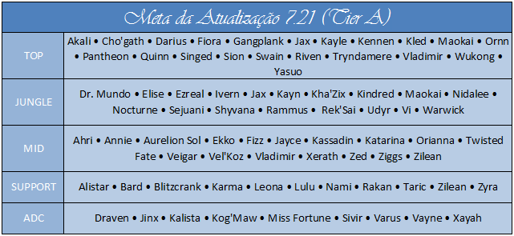

Os Campeões mais fortes do League Of Legends no Patch 7.21
Campeões nerfados e buffados
Nerfs: Azir, Sejuani, Ardent Censer.
Buffs: Ekko, Evelynn, Galio [Hotfixed], Gangplank, Udyr, Urgot.
Mundança: Rammus.
Jarvan IV: Enquanto isso, Jarvan pode ser absolutamente bom agora mesmo, com sua versão completa de letalidade deixando um dano limpo de 1000 em squishies com apenas sua ult ... ou seu E-> Q -> auto. De qualquer forma, as bolas de neve são muito difíceis e acabam com a habilidade de excluir verdadeiramente os squishies à vista, punindo-os por sua impudência.
Talon: Embora Talon tenha problemas contra os hackers de tanque de alta sustentação quando eles estão no meta, ele faz muito bem contra campeões de corpo a corpo suaves que gostam de duelar. Como resultado, Talon se destaca no atual meta como um campeão de bola de neve cheesy.
Twitch: Twitch continua a ser incrivelmente irritante não apenas por causa de sua sinergia com o Ardent Censer, mas também pelo fato puro de que sua habilidade para atiradores inimigos individuais sempre que eles estão fora de posição é imensa. Embora ele com certeza seja incrível com um apoio Ardente ao seu lado, ele faz melhor do que a maioria dos outros atiradores sem ele.
Urgot: Urgod está de volta como um ladrão de primeira linha. Não há muito a dizer, além de que ele faz muito dano, é quase inábil, e o seu melhor é mais esmagador para morrer do que Darius ult. Enquanto isso, a mudança na velocidade do míssil com o seu máximo torna quase impossível reagir a tempo de esquivar em um alcance próximo a médio alcance (mesmo com flash).
////////////////// Não á conexão 7.21, continuei com o 7.21 ///////////////////
Leona: Após o nerfs no Ardent Censer, os suportes de casca permanecem muito fortes. No entanto, Leona tende a ser um excelente contador para eles (fora de qualquer falha de balanceamento absurdo). Como resultado, ela atualmente é bastante decente, pois todos os suportes tendem a contrariar sustentação de suporte quando os números são estáveis.
Miss Fortune: Miss Fortune continua a ser bastante subestimada no atual meta. Não importa se você a joga com letalidade ou uma construção mais tradicional, sua última batida é uma brisa como resultado de sua passiva, e sua habilidade para destruir as equipes inimigas através do seu melhor é a mudança de jogo na fila solo.
Udyr: Após a nova rodada de buffs em Udyr, ele é bastante bom na selva em sua postura Tiger.
Wukong: Wukong top é interessante para mim e estou começando a suspeitar que a maioria dos jogadores simplesmente não está usando ele corretamente na pista superior. Depois de pegar Duskblade, se ele começa a partir do arbusto, E-> auto-> Q-> W-> auto sai de dois procs Duskblade em 2 segundos ... esta é uma quantidade bastante fraca se você ainda não percebeu, e praticamente nenhum campeão pode suportar esse tipo de explosão. Obviamente, ele vai perder para alguém como Urgot, mas ele cumpre um papel semelhante ao Talon top em que ele pode assassinar e duelar qualquer tipo de louças cheesy melee top.